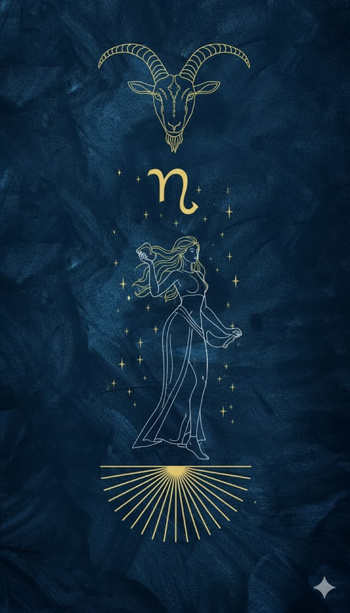

Oğlak
22 Aralık – 19 Ocak · Element: Toprak · Yönetici: Satürn

Genel Profil
Oğlak; disiplin, hedef ve sorumluluk enerjisidir. Uzun vadeli plan yapar, adım adım ilerler.
Fazla yük alırsa sertleşebilir; dinlenmeyi planına dahil etmesi gerekir.
Güçlü Yönler
- Disiplin
- Strateji
- Dayanıklılık
- Sorumluluk
Zorlayıcı Yönler
- Katılık
- Aşırı kontrol
- İşkoliklik
- Duyguları bastırma
Aşk
Ciddi ve güven odaklı; zamanla derinleşir.
Kariyer
Yönetim, finans, mühendislik, hukuk, proje ve süreç yönetimi.
İpucu
Bugün 1 işi bitir: “küçük ama tamam” yaklaşımı.